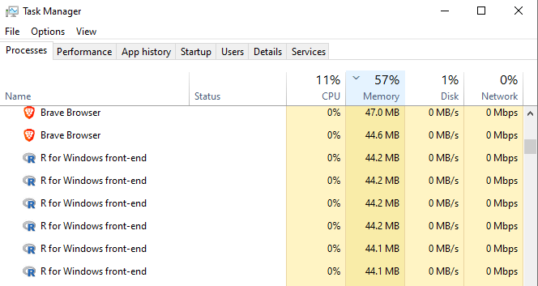

Code
library(tidyverse) # For general "tidyverse" style manipulations & operations
library(parallel) # base R package for parallel processing
library(foreach) # For looping
library(doParallel) # Parallel back-end for the `foreach` packageZac Dempsey
July 1, 2024
While most of the datasets we work with are of a manageable size here at the Telethon Kids Institute, occasionally we are presented with data containing millions of rows and/or thousands of columns. Performing almost any operation on these large datasets can take hours to execute – a real test of patience for exploratory work!
Parallel computing is one relatively simple way to reduce computation time on large datasets – leveraging our computer’s full processing capabilities by simultaneously distributing tasks “in parallel” across multiple processors (without too much extra code). This is particularly useful for loop-based computations, where multiple parameters or conditions must be swept over whether that be as part of variable creation, model tuning/execution, or some other task.
That being said, while parallel computing is not a “magical general solution” to all computationally intensive tasks – it is worth investing some time to understand how it works, and become familiar with the packages and/or functions used within a parallel framework. There are still circumstances where the handy purrr::map function (or the like) can be just as, or more, efficient than a parallel distribution.
Parallel computing refers to executing multiple operations in “parallel” (i.e., at the same time) across a machine’s multiple cores/processors. Most modern computers have at least four cores, and often many more. By default, R uses only one core, running iterative operations sequentially; not starting the next until the previous is complete. Under a parallel framework, however, multiple iterations/calculations can be allocated across multiple cores so they can be executed at the same time — thus saving (overall) time. These time savings accumulate particularly with large underlying tasks (as opposed to running many small tasks in parallel — a situation that often ultimately ends up slower!).
In this post, we will have a look at a couple of examples using R. We provide some simple examples and use-cases, in addition to some additional resources to continue learning.
The doParallel and foreach packages of R are one set of packages, intended to be used together, to facilitate parallel computing in a syntactically simple way. Additionally, the base parallel package is used for some basic set-up and detection.
These examples are run using R version 4.4.0 (2024-04-24) on Darwin 23.5.0.
It is potentially easier to think about when we should not consider parallel computing. For parallel computing to be workable, the overall job needs to be something that can be broken down into independent tasks — tasks that do not depend on the input/output of previous tasks to fully run. So, any piece of computational work - where the underlying tasks must be completed in sequential order - can not be executed (or sped up) with parallel computing. Such jobs may be the sequential (time dependent) processing of data (e.g., need to standardise variables before extreme values are identified and tagged) or ordered computation tasks (e.g., matrix algebra within a regression model).
A quick analogy: you can not complete the job of ‘making a pizza’ in a parallel way [you can not cook the pizza at the same time as you are preparing the dough at the same time as you are putting the toppings on the pizza]. But, if are making 10 pizzas for a customer, you can complete parts of this job in parallel, for example ‘preparing all the pizza dough’ [by getting 10 people with 10 bowls and 10 bags of flour to all mix a serve of dough at the same time].
As it relates to data analysis, parallel computing requires us to divvy up tasks in a standalone way, and (generally) assemble the output from those tasks in a sensible way. An example:
Of course, there is some overhead to allocating tasks and compiling results to different cores that one may want to consider before proceeding. Generally, it is worthwhile to pilot your code on a subset of the job to see if the code does truly benefit from parallelisation.
Let’s first load the packages we will use to render our examples
Let’s check the number of cores available on our machine.
We should not allocate all of our machine’s available cores to parallel computations – this will consume all of the available resources (and everything might grind to a halt)!
Let’s use 6 cores for our examples.
When we go to the Windows task manager, we see there are now 6 R front-end instances initialised, one for each of the 6 cores.

When we no longer require a parallel environment, we must shut down and de-register the parallel cores. Otherwise they will remain active (allocated/‘in-use’)!
Let’s also set a random seed for sample reproducibility.
Bootstrapping is a method that uses simple random sampling with replacement to mimic random sampling of a population. This allows us to estimate the sampling distribution for a statistic (mean, variance, etc.) and assess its stability/reliability, without making strong assumptions about the underlying population. This can be useful when the data are problematic in some fundamental way (small sample sizes, insufficient variation, violation of model assumptions).
In R, for-loops can be used to derive a set of bootstrap samples. As we will see, parallel environments can much more efficiently handle repeated independent operations like these.
Let’s use the mtcars data set to run a basic bootstrapped linear regression.
We would like to explore the association between a vehicle’s fuel efficiency (mpg) and horsepower (hp), weight (wt) and transmission type (automatic/manual, am).
We suspect – perhaps due to the small sample size – that some of the assumptions of standard linear regression may be violated (normality of errors). With bootstrapping, we can explore the stability of the regression coefficients by calculating a confidence interval about the bootstrapped coefficient estimates.
We will present 3 ways to bootstrap data – two using for-loop structures, and one using a parallel computing environment. In each instance, we will compare how the output is structured and results returned.
ind.resultsresults, and append this to an overall coefficient matrix bootstrap_coefs.bootstrap_cis.start <- proc.time() # Start our timer!
# Initialise a matrix to store the coefficients from each bootstrap sample
bootstrap_coefs <- matrix(NA, nrow = trials, ncol = 4)
colnames(bootstrap_coefs) <- names(coef(lm(mpg ~ hp + wt + am, data = mtcars)))
for (i in 1:trials){
# Take bootstrap sample
ind <- mtcars[sample(nrow(mtcars),
replace = TRUE),
]
# Construct linear regression
result <- lm(mpg ~ hp + wt + as_factor(am),
data = ind)
# Extract coefficients and store to `bootstrap_coefs`
bootstrap_coefs[i, ] <- coef(result)
}
# Calculate the 2.5th and 97.5th percentile for each variable's coefficient estimates from the bootstrap distribution.
bootstrap_cis <- apply(bootstrap_coefs,
2,
function(coefs){quantile(coefs, probs = c(0.025, 0.975))})
end <- proc.time() # End our timer!
time1 <- end-start
Let’s visualise the first few lines of the bootstrapped results
(Intercept) hp wt am
[1,] 34.04596 -0.02741585 -3.158154 0.6330600
[2,] 31.46670 -0.03097903 -2.375727 5.8142235
[3,] 35.98084 -0.02535775 -3.763464 -0.2485866
[4,] 33.47330 -0.04410244 -2.343210 2.6890689
[5,] 32.21798 -0.04138935 -2.222471 1.2289610
[6,] 32.78747 -0.02758182 -2.989311 1.1744731and associated 95% confidence interval
(Intercept) hp wt am
2.5% 29.07843 -0.05539954 -5.134682 -0.7627477
97.5% 40.74463 -0.02161861 -1.057830 4.9428501
This had the following run-time (seconds):
proc.time components
user = time the CPU has spent executing the R process.
system = time the CPU has spent on system-level operations that facilitate the R process (e.g., memory management, system calls).
elapsed = real-world time that has elapsed.
%do% loop (not parallel)As an alternative, let’s also use the %do% operator from the foreach package. Similar to a for-loop, each bootstrap sample is executed sequentially.
start <- proc.time()
bootstrap_coefs <- foreach::foreach(i = 1:trials, .combine = rbind) %do% {
ind <- mtcars[sample(nrow(mtcars), replace = TRUE), ]
result <- lm(mpg ~ hp + wt + am, data = ind)
coef(result)
}
# Calculate the 2.5th and 97.5th percentile for each variable's coefficient estimates from the bootstrap distribution.
bootstrap_cis <- apply(bootstrap_coefs,
2,
function(coefs) {quantile(coefs, probs = c(0.025, 0.975))})
end <- proc.time()
time2 <- end-start
Similarly, let’s visualise the first few lines of the bootstrapped results
(Intercept) hp wt am
result.1 32.28476 -0.02807558 -2.989010 2.404865
result.2 38.19523 -0.02740136 -4.576854 1.082726
result.3 32.87519 -0.06693216 -1.172027 3.879952
result.4 29.54068 -0.03806135 -1.468158 1.933494
result.5 31.54392 -0.02793433 -2.756060 1.347816
result.6 34.42623 -0.03900395 -2.865725 1.167583and associated 95% confidence interval
(Intercept) hp wt am
2.5% 29.03455 -0.05615444 -5.286909 -0.8228096
97.5% 41.09610 -0.02124169 -1.055386 4.9293286
This had the following run-time (seconds):
%dopar% parallelisationNow, let’s run this in parallel across 6 cores. The %dopar% operator defines the for-loop in the parallel environment.
doParallel::registerDoParallel(cores = 6) # Initialise parallel cluster
start <- proc.time()
bootstrap_coefs <- foreach(i = 1:trials, .combine = rbind, .packages = 'stats') %dopar% {
ind <- mtcars[sample(nrow(mtcars), replace = TRUE), ]
result <- lm(mpg ~ hp + wt + am, data = ind)
coef(result)
}
# Calculate the 2.5th and 97.5th percentile for each variable's coefficient estimates from the bootstrap distribution.
bootstrap_cis <- apply(bootstrap_coefs,
2,
function(coefs) {quantile(coefs, probs = c(0.025, 0.975))})
end <- proc.time()
time3 <- end-start
doParallel::stopImplicitCluster() # De-register parallel clusterAs expected, the output of the bootstrapped coefficient distribution are identical before
(Intercept) hp wt am
result.1 32.14543 -0.04239251 -2.292602 4.678353
result.2 37.59140 -0.04448986 -3.600424 1.098414
result.3 32.54637 -0.04617972 -1.957142 4.210771
result.4 33.28426 -0.03195130 -3.044031 1.849928
result.5 35.20165 -0.04977160 -2.695694 2.336422
result.6 32.86326 -0.03602319 -2.752255 2.641118as are the associated 95% confidence intervals.
(Intercept) hp wt am
2.5% 28.94499 -0.05548037 -5.269688 -0.8378117
97.5% 41.03826 -0.02120406 -1.051587 4.8456107Lastly, this had the following run-time (seconds)
Immediately, the syntax of the alternative for-loop structures are more readable and easier to construct than the traditional for-loop. Because the foreach::foreach function easily combines output in a list, we need not define an empty matrix to append output to.
Computation time in the parallel environment is significantly faster — approximately 68% faster than the traditional for-loop! Across multiple analyses and data sets, these time savings certainly add up!
Let’s say we would like a model that predicts the distribution of a plant species based on various environmental factors (temperature, precipitation, elevation, vegetation type). We would like to use a random forest model (using the randomForest package of R) — a popular model for classification which combines the output across multiple decision trees.
This example is inspired by the example from the vignette of the foreach package.
First, let’s simulate our data set and set some parameters:
10,000 observations.
Independent variables temperature, precipitation and elevation sampled from a random normal distribution and vegetation type (categorical factor) randomly prescribed.
Species presence (dichotomous) outcome variable is randomly prescribed.
n <- 10000 # Sample size
data <- data.frame(temperature = rnorm(n,
mean = 15,
sd = 40),
precipitation = rnorm(n,
mean = 1000,
sd = 300),
elevation = rnorm(n,
mean = 500,
sd = 200),
vegetation_type = as_factor(sample(c("forest",
"grassland",
"wetland",
"desert"),
n,
replace = T)),
species_presence = as_factor(sample(c("present",
"absent"),
n,
replace = T)))Let’s assign 70% of the data to our training set, and the remaining 30% to test data set and initialise a random forest model with 1000 trees.
Instead of running one random forest model comprising 1000 trees, let’s combine the results of 4 smaller random forest models models each comprising 250 trees. By doing this, we can return more reliable and robust output (smaller random forest models are less prone to overfitting) and better manage working memory (smaller models require less memory to train and store).
start <- proc.time()
rf <- list()
for (i in 1:(num_trees/250)){
rf[[i]] <- randomForest::randomForest(species_presence ~ .,
data = train_data,
ntree = num_trees/4)
}
combined_output <- do.call(randomForest::combine, rf)
predictions <- predict(combined_output, test_data %>% select(-species_presence))
end <- proc.time()
time1 <- end - startLet’s print the confusion matrix of this output. Because this data was relatively simply simulated, we don’t expect the predictive power to be too great.
predictions absent present
absent 707 769
present 779 745This has the following run-time (seconds):
Similar to the traditional for-loop, we can sequentially execute this code using the %do% operator.
start <- proc.time()
rf <- foreach::foreach(ntree = rep(num_trees/4, 4),
.combine = randomForest::combine,
.packages = 'randomForest') %do%
randomForest::randomForest(species_presence ~ .,
data = train_data,
ntree = ntree)
predictions <- predict(rf, test_data %>% select(-species_presence))
end <- proc.time()
time2 <- end - startLet’s print the confusion matrix of this output. Because this data was relatively simply simulated, we don’t expect the predictive power to be too great.
predictions absent present
absent 699 777
present 787 737This has the following run-time (seconds):
For simplicity, let’s allocate 4 cores to the computation and imagine that one core is responsible for processing one of the four random forest models simultaneously.
doParallel::registerDoParallel(cores = 4)
start <- proc.time()
rf <- foreach::foreach(ntree = rep(num_trees/4, 4),
.combine = randomForest::combine,
.packages = 'randomForest') %dopar%
randomForest::randomForest(species_presence ~ .,
data = train_data,
ntree = ntree)
predictions <- predict(rf, test_data %>% select(-species_presence))
end <- proc.time()
doParallel::stopImplicitCluster()
time3 <- end-startLet’s print the confusion matrix of this output. Because this data was relatively simply simulated, we don’t expect the predictive power to be too great.
predictions absent present
absent 709 760
present 777 754This now has the following run-time (seconds):
Again, using easily adaptable and readable syntax, we leverage a parallel environment to significantly lessen the computation time of our large model. Relative to a standard for-loop, the parallelised computation is approximately 47% faster.
As hinted to in the overview to this blog, parallel computing is not the general solution to running loop-based code more quickly. Instances which run intrinsically “fast” will not benefit from a parallel environment and may in fact run slower in parallel, after accounting for the overhead in ‘managing’ the task division and result assembly.
There are other packages which may be useful in these circumstances, such as the often handy purrr::map which we examine below.
Let’s apply this to a situation where we have different model specifications we would like to run on the same data set.
nycflights13::flights — a set of over 300,000 flight records that departed from all NYC airports in 2013.# A tibble: 336,776 × 7
year day dep_delay arr_delay air_time distance arr_delay_bin
<int> <int> <dbl> <dbl> <dbl> <dbl> <fct>
1 2013 1 2 11 227 1400 0
2 2013 1 4 20 227 1416 1
3 2013 1 2 33 160 1089 1
4 2013 1 -1 -18 183 1576 0
5 2013 1 -6 -25 116 762 0
6 2013 1 -4 12 150 719 0
7 2013 1 -5 19 158 1065 1
8 2013 1 -3 -14 53 229 0
9 2013 1 -3 -8 140 944 0
10 2013 1 -2 8 138 733 0
# ℹ 336,766 more rows
We would like to specify a set of models which predict overall flight delay, as both continuous (arrival delay time) and dichotomous (delayed yes/no) outcomes.
Outcome variables
Independent variables
Flight distance (distance)
Air time (air_time)
Departure delay (dep_delay)
For each outcome variable, we run a model. If the outcome variable is continuous, we run a simple linear model; otherwise we run a basic logistic regression.
start <- proc.time()
models <- list() # To store our model output
for (i in outcome_vars){
if (i == "arr_delay"){
model <- lm(as.formula(paste(i,"~",paste(indep_vars, collapse = "+"))),
data = flights)
} else if (i == "arr_delay_bin"){
model <- glm(as.formula(paste(i,"~",paste(indep_vars, collapse = "+"))),
family = binomial,
data = flights)
}
models[[i]] <- summary(model)
}
end <- proc.time()
time1 <- end-startThis returns a list with the model output summary for each of our models.
The for-loop has the following run-time (seconds):
purrr::mapMap functions apply a function to each element of a list/vector and return an object. In cases relying on multiple computations across different values, they often come in handy.
start <- proc.time()
models <- map(outcome_vars,
~ if (.x == "arr_delay"){
lm(as.formula(paste(.x, "~",
paste(indep_vars, collapse = " + "))),
data = flights) %>%
summary()
} else if (.x == "arr_delay_bin"){
glm(as.formula(paste(.x, "~",
paste(indep_vars, collapse = " + "))),
family = binomial,
data = flights) %>%
summary()
}
)
names(models) <- outcome_vars
end <- proc.time()
time2 <- end-startThis has the following run-time (seconds):
furrr::future_mapThere is also a parallel implementation of the purrr::map function, offered by the furrr package. The syntax is (nicely) identical to above, but importantly relies on specifying a parallel (multisession) “plan” ahead of executing the code (similar to what we did in Example 1 and 2).
library(furrr)
plan(multisession, workers = 6) # Initialise parallel environment using furrr
start <- proc.time()
models <- furrr::future_map(outcome_vars,
~ if (.x == "arr_delay"){
lm(as.formula(paste(.x, "~",
paste(indep_vars, collapse = " + "))),
data = flights) %>%
summary()
} else if (.x == "arr_delay_bin"){
glm(as.formula(paste(.x, "~",
paste(indep_vars, collapse = " + "))),
family = binomial,
data = flights) %>%
summary()
}
)
names(models) <- outcome_vars
end <- proc.time()
time3 <- end-start
plan(sequential) # Revert to sequential processingThis has the following run-time (seconds):
%dopar% parallelisationAlternatively, as done earlier, we can turn our non-parallel %do% code into parallel %dopar% code.
We use the %:% operator from the foreach package to nest a for-loop within a parallel environment.
The syntax does not differ too dramatically.
doParallel::registerDoParallel(cores = 6)
start <- proc.time()
models <- foreach(j = outcome_vars, .combine = "list") %dopar% {
if (j == "arr_delay"){
model <- lm(as.formula(paste(j,"~",paste(indep_vars, collapse = "+"))),
data = flights)
} else if (j == "arr_delay_bin"){
model <- glm(as.formula(paste(j,"~",paste(indep_vars, collapse = "+"))),
family = binomial,
data = flights)
}
}
names(models) <- outcome_vars
end <- proc.time()
time4 <- end - start
doParallel::stopImplicitCluster()This has the following run-time (seconds):
We now see that the parallel processing of these tasks takes far longer – about 19% so! The underlying set of operations — running a series of linear models — are already small and relatively fast, so the overhead of managing the task (splitting, computing and combining results) in a parallel environment far exceeds what what can easily be spun up using a for-loop (or purrr::map).
Using just a few relatively simple examples, we have demonstrated that a parallel computing environment can be a relatively easy and quick way to improve the runtime of iteration/loop-based operations (under the right circumstances). Importantly, this does not increase the code complexity nor decrease the code readability!
While not always appropriate, it is worth staying across the parallel implementations as they become available on R, particularly as the size of datasets and/or the complexity of analytical workflows increase.
Thanks to Wesley Billingham, Matt Cooper, and Elizabeth McKinnon for providing feedback on and reviewing this post.
You can look forward to seeing posts from these other team members here in the coming weeks and months.
To access the .qmd (Quarto markdown) files as well as any R scripts or data that was used in this post, please visit our GitHub:
https://github.com/The-Kids-Biostats/The-Kids-Biostats.github.io/tree/main/posts/parallel
The session information can also be seen below.
R version 4.4.0 (2024-04-24)
Platform: aarch64-apple-darwin20
Running under: macOS Sonoma 14.5
Matrix products: default
BLAS: /Library/Frameworks/R.framework/Versions/4.4-arm64/Resources/lib/libRblas.0.dylib
LAPACK: /Library/Frameworks/R.framework/Versions/4.4-arm64/Resources/lib/libRlapack.dylib; LAPACK version 3.12.0
locale:
[1] en_US.UTF-8/en_US.UTF-8/en_US.UTF-8/C/en_US.UTF-8/en_US.UTF-8
time zone: Australia/Perth
tzcode source: internal
attached base packages:
[1] parallel stats graphics grDevices utils datasets methods
[8] base
other attached packages:
[1] furrr_0.3.1 future_1.33.2 randomForest_4.7-1.1
[4] doParallel_1.0.17 iterators_1.0.14 foreach_1.5.2
[7] lubridate_1.9.3 forcats_1.0.0 stringr_1.5.1
[10] dplyr_1.1.4 purrr_1.0.2 readr_2.1.5
[13] tidyr_1.3.1 tibble_3.2.1 ggplot2_3.5.1
[16] tidyverse_2.0.0
loaded via a namespace (and not attached):
[1] utf8_1.2.4 generics_0.1.3 stringi_1.8.4 listenv_0.9.1
[5] hms_1.1.3 digest_0.6.36 magrittr_2.0.3 evaluate_0.24.0
[9] grid_4.4.0 timechange_0.3.0 fastmap_1.2.0 jsonlite_1.8.8
[13] fansi_1.0.6 scales_1.3.0 codetools_0.2-20 cli_3.6.3
[17] rlang_1.1.4 parallelly_1.37.1 munsell_0.5.1 withr_3.0.0
[21] yaml_2.3.9 tools_4.4.0 tzdb_0.4.0 colorspace_2.1-0
[25] globals_0.16.3 vctrs_0.6.5 R6_2.5.1 lifecycle_1.0.4
[29] htmlwidgets_1.6.4 pkgconfig_2.0.3 pillar_1.9.0 gtable_0.3.5
[33] glue_1.7.0 xfun_0.46 tidyselect_1.2.1 rstudioapi_0.16.0
[37] knitr_1.48 htmltools_0.5.8.1 rmarkdown_2.27 nycflights13_1.0.2
[41] compiler_4.4.0